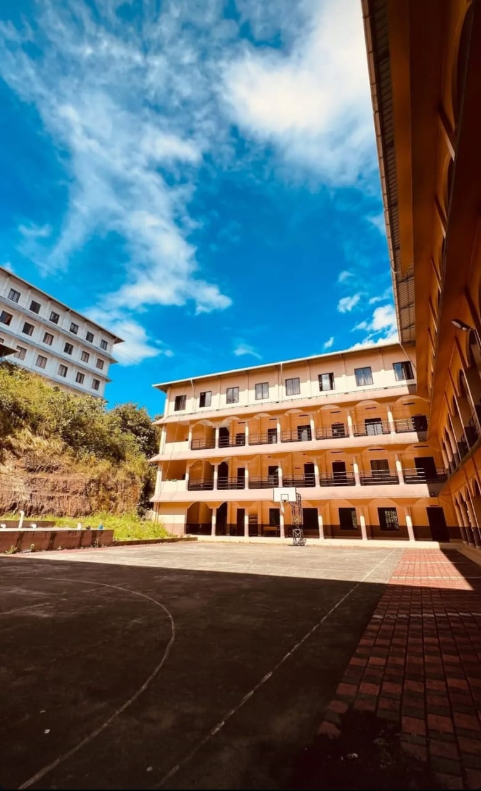
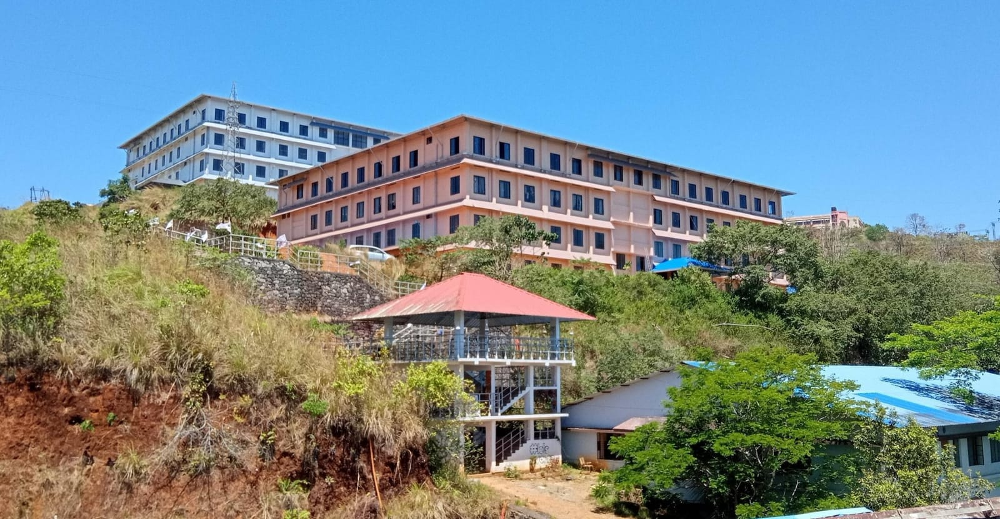
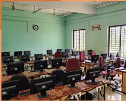

OVERVIEW
Department of Information Technology at Government Engineering College, ldukki was established in the academic year 2000. The faculties of our department are well qualified and have rich knowledge in their subjects. Highly committed faculty members are keen on encouraging students to involve in various co-curricular and extra-curricular activities along with their academics. Also the department has a highly advanced infrastructure including high speed internet facilities, class rooms equipped with LCD projectors and digital podiums. The department labs are equipped with state of art of learning tools, advanced computing infrastructure with world class software environment and development tools which satisfy the bench mark in high end IT education. It also conducts short-term training program for both the staff and students for updating them with the latest technological trends.
DEPARTMENT PHOTOS



MISSION
"To be a centre of excellence in the field of InformationTechnology which nurtures young minds through technological adaptation, research, innovation and entrepreneurial skills complying to the needs of society and industry.”
VISION
01.. Imparting career oriented professional
education to students through effective
delivery of the curriculum.
02. Establishing effective adaptation of cutting
edge technologies through industry
collaborations and mentoring.
03. Empowering individuals to be socially
responsible by inculcating critical thinking,
innovation and ethical values.